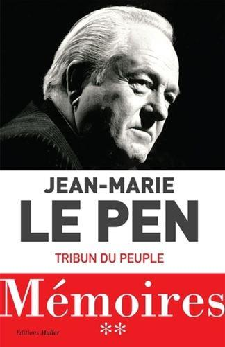
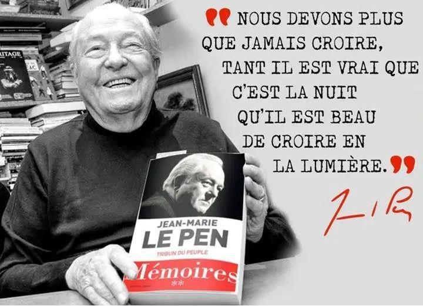
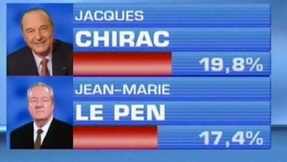

Après le premier tome des Mémoires de Jean-Marie Le Pen paru en février 2018 portant en sous-titre « Fils de la nation » voici la parution en octobre 2019 du deuxième volume qui porte en sous-titre « Tribun du peuple ».
L’éditeur n’a pas changé, ce sont les éditions Muller qui ont publié ce deuxième opus de près de 560 pages. La période relatée par l’auteur s’étend des environs de 1968 à nos jours. Les nombreuses élections qui ont jalonné cette longue période de notre histoire contemporaine sont passées en revue dans l’ouvrage : des élections législatives et régionales, les européennes, les municipales et les présidentielles. L’ouvrage est divisé en six parties et quarante-trois chapitres proportionnellement bien répartis, dans lesquels on croise les personnages qui ont entouré l’auteur. Amis ou ennemis, défectifs ou fidèles, les portraits sont courts et incisifs, J-M Le Pen a décidément le sens de la formule et du mot qui fait mouche. Dès l’avant-propos, le verbe, rapide et acéré, fuse comme une flèche décochée par un archer habile :
« Éric Zemmour a parlé de suicide français, c’est une erreur, hélas : la France a été assassinée. J’accuse François Mitterrand et Jacques Chirac d’un crime encore pire que la haute trahison, je les accuse du meurtre de leur pays. Après eux vint le temps des petits malfaiteurs. » p13
On peut certes trouver restrictif cette limitation à deux présidents. Les petits malfaiteurs venus par la suite ne se sont pas privés de donner eux aussi des coups mortels ; du refus du NON au référendum par le Congrès de Versailles de février 2008 au Pacte de Marrakech de 2018, les successeurs de Mitterrand et Chirac ont continué de tenir fermement l’oreiller sur le visage de la France moribonde.
Le style d’écriture est délié, les mots bien choisis, les tournures claires et compréhensibles. L’emploi du subjonctif est toujours fait à bon escient mais donne parfois une emphase vieillotte, qui n’est pas déplaisante et colle assez bien au personnage. Lorsque l’auteur, âgé aujourd’hui de plus de 90 ans, parle de lui, le sens de la formule est parfois touchant :

« Les petits riens de l’existence me boivent les uns après les autres. » p467
Ou bien :
« Mon carnet d’adresses est un cimetière dont je ne sais plus ce que sont devenues de nombreuses tombes. » p88
Tout au long de l’ouvrage, ce qui en rend la lecture plaisante, surgissent des réflexions philosophiques sur les aléas de l’existence, les grandes joies et les petits bonheurs, les revers de fortune et les coups de chance :
« Mais l’argent et le succès défont les nœuds qu’a serrés la vache enragée. » p130
Ces Mémoires ne sont pas des confessions, il ne faudra donc pas y chercher ce qu’on ne peut pas y trouver : des remords ou des regrets. Parachutiste dans un régiment de la Légion Étrangère, l’auteur y applique la devise des légionnaires, tirée d’une célèbre chanson d’Édith Piaf : « je ne regrette rien. » Mais ne pas faire de ces Mémoires des Confessions n’empêche pas l’auteur d’aborder beaucoup de points sensibles tels que les finances du Front National et ses propres finances ; les divergences de stratégies avec sa fille Marine, sans pour cela se livrer à un graphique comptable de fin d’année ou à des tableaux sentimentalistes de familles au coin du feu.
Ces Mémoires ne sont pas non plus un livre d’histoire ou un livre sur les mœurs politiques du proche passé ; l’auteur parle de ses souvenirs, de son vécu et peut parfois se tromper. À la page 27, il y a manifestement un embellissement des mœurs politiques d’avant 68 :
« …mais les militants politiques de mon temps, quand ils se battaient entre eux le faisaient le plus souvent avec les poings, quelques fois avec les pieds, généralement d’homme à homme et sans s’acharner sur l’adversaire à terre. On se mesurait. Après avoir pris et donné des coups, il arrivait qu’on aille en boire un. […] Une des choses qui m’ont frappé en 1968, c’est l’apparition des armes, des casques, des barres de fer. » p27
Tous les militants d’avant 68 ne gardent peut-être pas de pareils souvenirs d’affrontements virils à la loyale, même s’ils ont pu exister. Pendant les campagnes d’affichages, certains étaient parfois armés de pistolets et les manches de pioches servaient rarement à faire des infusions ! Des colleurs sont parfois morts en sortie. Chacun a son vison de l’histoire, même les historiens professionnels ne sont pas exempts de subjectivité.
Au sujet de son fabuleux héritage des cimentiers Lambert, l’auteur consacre plusieurs pages qui résument l’affaire assez brièvement. Bien entendu, nous n’avons là qu’un seul son de cloche, il n’y a donc pas de disharmonie. Mais pourquoi ne pas croire J-M Le Pen de bonne foi ? Il gagna tous les procès qu’il intentât pour le sujet et finit par un arrangement à l’amiable.
Il relate aussi l’attentat au plastic de son domicile villa Poirier survenu à la même période (1976) la charge était faite pour tuer. Par une chance incroyable il n’y eut aucune victime, un bébé chuta du quatrième étage et eut …un bras cassé ! Les journaux parlèrent très peu de l’attentat et l’enquête n’a jamais n’abouti.
Est-ce un hasard ?
À la page 138, l’auteur ne fait pas secret des financements de sa tournée internationale et j’ai été assez stupéfait d’apprendre que les fonds venaient de la secte Moon, via Pierre Ceyrac, neveu de François Ceyrac du CNPF (Conseil National du Patronat Français, l’ancêtre du MEDEF) Cette tournée internationale de 1985 fut en réalité un véritable tour du monde !
On retrouvera sous la plume de J-M Le Pen, cité à plusieurs reprises, le nom de Moon , page 232 :
(Les présidentielles de 1988) « Je profitais de cette ouverture grâce à une campagne exceptionnelle. Je bénéficiais pour une fois d’une couverture nationale de placards de 4 x 3 que j’obtins à la fois en bénéficiant d’un prix d’ami et d’un coup de pouce de Moon. »
Et à la page suivante :
« Ma campagne à Marseille fut un modèle du genre, (les législatives de 88) les gens de Moon collaient et tractaient par dizaines, couchant sur la dure et marnant du soir au matin. »
La troisième partie du livre à partir de la page 175 s’intitule « L’embuscade médiatique » il est en grande partie consacré à la presse et aux affaires Le Pen : le détail, (émission politique de RTL le 13 septembre 1987) sur lequel il revient longuement et fort justement dans les détails ! J’avais à l’époque suivi l’affaire sans grande attention mais avec un scepticisme de rigueur sur ce qu’en disait la presse aux ordres dont je me méfiais déjà énormément. J’ignorais l’intervention de nombreux personnages qui, par leur poids politique firent monter la mayonnaise jusqu’à en devenir une affaire quasi internationale. L’Ambassadeur d’Israël publia une déclaration de protestation et Ariel Sharon fit un voyage éclair de Tel-Aviv à Strasbourg ! Jean-Marie Le Pen donna une conférence de presse à ce sujet le 18 septembre, seul Le Quotidien de Paris reproduisit le texte de sa déclaration, la presse, en général l’ignora superbement !
Un chapitre entier est consacré à l’affaire du cimetière juif profané de Carpentras (Mai 1990). Jean-Marie Le Pen revient sur la chronologie de l’histoire, les énormités mensongères des journaux (le prétendu empalement d’un cadavre déterré) les bâclages de l’enquête et les montages du Ministre de l’Intérieur de l’époque. Là, j’avais suivi l’affaire d’un peu plus près et je voyais sans surprise l’hystérie collective donner un avant-goût de ce que deviendrait la fonction présidentielle : le Président de la République, François Mitterrand descendit dans la rue pour manifester ! Pour demander quoi et à quelle instance, on se le demande…
Laissons pour conclure cette affaire la parole à l’auteur :
« La comédie plût au public. Un sondage BVA-TF1 nous apprit que 41 % des français me rendaient responsable de la profanation de Carpentras. La même proportion de 41 % estima cette profanation « presque aussi importante que le chute du mur de Berlin. » p199
Ite missa est. L’auteur revient également sur la bousculade d’une élue à Mantes-la-Jolie, bousculade qui fit couler beaucoup d’encre et de montages télé :
« À l’inverse, quand les images diffusées établissent mon innocence, Françoise Martres, la Présidente, celle qui sera plus tard la patronne du Syndicat de la Magistrature, celle du futur « mur des cons », se détourne ostensiblement. » p255
La Justice n’est pas toujours aveugle avec les élus du Front National, l’auteur nous apprend que souvent lorsque Jean-Marie Le Pen gagne un procès il a droit à l’euro symbolique de réparation, lorsqu’il le perd, ce sont des milliers d’euros qu’il doit sortir de sa poche… Même s’il n’en est plus Président, la justice ne faiblit pas et reste effectivement « aveugle » avec le Front National :
« Et Sébastien Chenu a noté à l’été 2018 qu’au moment où des juges, dont le vieux trublion Renaud Van Ruymbeke bloquaient deux millions de subventions destinés au Front National, la procédure annoncée contre le Modem pour des faits analogues n’avait pas commencé. » p277
Au chapitre 30, « Le tournant irakien », l’auteur, après un bref résumé de l’histoire de l’Irak, se livre à une analyse complète de la guerre du Golfe, lorsque l’Irak de Saddam Hussein envahit le Koweït.
C’est le chapitre certainement le plus brillant de l’ouvrage. J-M Le Pen nous rappelle au passage le scandale de la désinformation et les montages de presse au sujet des bébés arrachés des couveuses et jetés sur le sol. Les médias n’en ont jamais fait amende honorable ; leur façon de fonctionner n’a d’ailleurs pas changé depuis.
Témoignage de la jeune Nayirah devant le Congrès américain, octobre 1990
Aux pages 318/319 J-M Le Pen se livre à un juste portrait de Philipe de Villiers et de sa stratégie. Effectivement le programme des européennes de 1994 de Ph. De Villiers ressemble étrangement à celui du FN et il lui rafla pas mal de voix : celles de la droite catholique et des souverainistes conservateurs.
Le Pen boit de la bière et de Villiers du thé, ça présente mieux…
Le chapitre 33 intitulé « Le tour infernal » nous rappelle ce que fut l’entre deux tours des présidentielles de 2002 lorsque J-M Le Pen accéda au deuxième tour de l’élection présidentielle. Même l’observateur de la vie politique le plus averti peine à se souvenir de l’ampleur de la mobilisation hystérique de la société dans son ensemble. La presse bien entendu, mais quasiment chaque corps de métier, des repasseuses ambidextres au syndicat des poseurs de tuiles romaines appelèrent à dire non au fascisme ! Selon certains analystes politiques J-M Le Pen n’a jamais voulu du pouvoir et c’est la raison pour laquelle le soir du 21 avril il avait l’air sombre. En réalité, comme il l’écrit, il pensait au lendemain :
« Je pensais qu’il était très improbable que je gagne, mais pas impossible. Or ma victoire provoquerait des difficultés insurmontables. Nous n’avions aucun des relais nécessaires à prendre le pouvoir, vers les médias, la finance, l’armée, la police, l’administration, nous n’avions pas d’alliés.
Nous n’avons jamais eu d’alliés. […] Nous étions tragiquement seuls et j’étais sûr, dès le premier instant que le système ne nous ferait pas de cadeau. » p346

Cela n’a pas changé et c’est une des raisons pour lesquelles le Rassemblement National ne pourra que très difficilement accéder aux commandes : il peine à obtenir des prêts des banques européennes pour financer ses campagnes, les banquiers n’ont pas le mouvement national en sympathie. Il parait difficile qu’un mouvement politique, fut-il populaire et majoritaire dans les urnes puisse sans relais gouverner un pays. Il faut pour cela avoir une partie des institutions et de la société civile avec soi. Or, en France la presse, les médias en général, les banques, les loges maçonniques, les syndicats, les magistrats, voire la police même sont anti Rassemblement National. Jean-Marie Le Pen reprend d’ailleurs son antienne de la page 346 et la reporte à la page 439 pour l’appliquer aux élections des présidentielles de 2017 où Marine Le Pen arriva au second tour. Mais les instances en question n’auraient même pas besoin de se manifester et de recourir comme en 2002 à une grande mobilisation hystérique : après l’élection de Nicolas Sarkozy en 2007, il fallut, plusieurs semaines après le vote, dans certaines banlieues, que les élus socialistes calment le jeu des « d’jeunes » émeutiers qui refusaient le résultat des urnes.
En 2002, entre les deux tours, le pays s’arrêta. Les lycées, les facs, les écoles, tout ce que le marxiste Althusser désignait comme Appareils Idéologiques d’État, se mit en branle, en grève, en arrêt, en mode antifasciste ; l’Église catholique ne resta pas à l’écart de la meute, l’Évangile, c’est sûr, était anti Le Pen et les évêques de France avaient la bonne grille de lecture ! Les actes de violences et d’intimidations furent nombreux et quasi officiels :
« Sur le marché d’Ivry-sur-Seine, les hauts parleurs diffusèrent ce message avant le deuxième tour : « Toute personne touchant le bulletin de vote de Jean-Marie Le Pen sera identifié comme étant un de ses soutiens » p352
Dresser l’inventaire de ces deux semaines d’hystérie collective serait trop fastidieux et l’auteur, tout en étant prolixe sur le sujet, tant les représentations furent nombreuses, ne parvient pas à faire un tour d’horizon complet de ce que Philippe Murray nomma très justement La grande quinzaine anti-Le Pen.
« Un peu comme lors de la séquence historique qui entoura la guerre du Golfe. La réalité visible et vérifiable n’avait plus aucune importance. Seule comptait la certitude criée par tous. » p348
Seuls, les adultes lucides qui ont un minimum de conscience de la chose publique et qui ont vécu ces deux semaines de folie collective peuvent s’en souvenir, l’Histoire ne rendra jamais exactement l’atmosphère et le climat de la France à ce moment-là.
Bien sûr la querelle avec sa fille Marine qui prendra la tête du Front National et en changera le nom, est abordée et le père n’est pas toujours tendre pour la fille. La ligne politique adoptée par Marine Le Pen est différente de celle que tint son père lorsqu’il était à la tête du mouvement. Est-elle meilleure ? Il est un peu tôt pour trancher. Page 392, l’auteur reconnait que Marine Le Pen bénéficia de son soutien à la présidence du Front National :
« La campagne démarra très vite. Celle de Bruno fut remarquable. Mais Marine bénéficia de mon soutien et cela fut primordial. Elle fut élue avec deux tiers des voix. »
Beaucoup se sont gaussés de cette affaire de soutien en disant que le Front National est une affaire de famille. C’est possible, mais comme le fait remarquer Le Pen, le candidat opposé à Marine, Bruno Gollnisch, était d’une autre génération, Marine est une femme jeune et l’air du temps est aux femmes en politique. Par contre, contrairement à ce qu’affirme l’auteur, s’appeler Le Pen n’est peut-être pas un atout…
Il est assez rare que les analystes ou les politiciens se risquent à fixer une date ou une durée à la grande catastrophe à venir, J-M Le Pen l’ose et on ne peut pas lui donner tort, les choses s’accélèrent :
« La viabilité et l’unité de la France ont demandé des siècles de guerre. Elles sont aujourd’hui menacées, et le terme de notre destruction est de moins de trente ans. » p414
À la page 467, de l’humour et aussi de belles formules qui sonnent juste. Parlant de François Hollande :
« C’est lui qui est à l’origine de la suppression du mot race dans la constitution. Il aurait dû aussi supprimer cancer du dictionnaire… »
Quant à Emmanuel Macron, il n’est pas mieux loti et l’énoncé est plus vrai que nature :
« Macron lui, fait des homélies de cadre sup en fin de séminaire. »
En politicien averti, Jean-Marie Le Pen sait manier les chiffres, mais là, ce n’est pas pour convaincre de voter pour lui ou pour dresser un bilan catastrophe de son adversaire politique. C’est juste pour nous donner une idée vertigineuse de l’Histoire :
« La Grande Guerre défie l’imagination. Il y a eu plusieurs journées où 30 000 morts sont tombés. 30 000 en un jour, plus que les pertes de l’armée française pendant la guerre d’Algérie. Par comparaison le total des morts au combat des États-Unis s’élève à 53 000 pour toute la première guerre mondiale, le débarquement du 6 juin 44 a fait 10 500 morts chez les alliés, et la bataille de Normandie, pourtant terrible et longue 3 000. » p482
Certaines journées à trente mille morts donnent une idée de la saignée de 14/18. Mais cette saignée terrible qui offrit à la fin de la guerre trois femmes pour un homme, ne fit que suivre les saignées précédentes : celle de la révolution de 89, celles des campagnes napoléoniennes et toutes celles qui ont suivi. Fauchant la plupart du temps des hommes jeunes en âge de se reproduire. La France est morte par l’hémorragie des terribles saignées que lui ont imposées les diafoirus de tous calibres et de tous bords. C’est aussi une vérité. Le déclin démographique volontaire de la France, du fait de la non reproduction de sa population originaire, en est une autre.
En résumé, le volume II de ces Mémoires un très bon livre d’une bonne écriture qui se lit facilement.
Même si la saveur n’est pas la même que pour le premier volume. Le premier opus parlait de l’enfance et des années de jeune homme, des débuts en politique d’un homme qui marquera son époque, l’aventure y était plus prégnante, plus incertaine. Le lecteur découvrait un personnage. Le tome II parle d’un politicien patriote et du parti qu’il créa. On peut partager certaines analyses des deux volumes, mais pas toutes :
« L’union des droites peut s’envisager car il existe à droite de nombreux électeurs conscients de l’enjeu national, et que de nombreux militants et politiques de base seraient prêts à les suivre. » p445
Jadis il ne fallait pas désespérer Billancourt, aujourd’hui il ne faut pas désespérer la classe moyenne :
« La démocratie de base existe », faisons semblant de le croire ! Après tout, pourquoi ne pas conserver un minimum d’espoir ?
Partager cette page